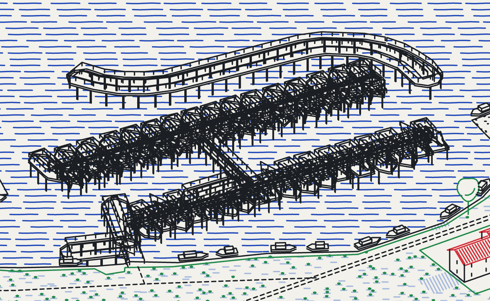
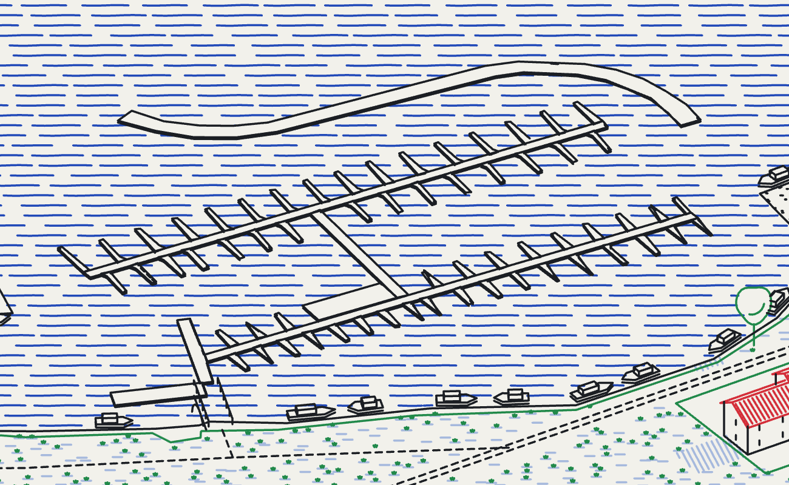

Original review · 15 November 2026
Reproduced at 47.1284° N, 9.1071° E, scale 1:1000, bearing 35°. The transport layer supplies 64 closed pier footprints here. Treating their perimeters as bridge centre lines added two shifted sides, elevated railings, repeated posts and submerged supports around each narrow finger. These overlapping constructions caused the black tangle.


Closed pier ways now use their actual footprint as a shallow deck with a single outline. Its depth face and water exclusion mask keep ripples below the deck. No bridge-width offset, invented railing or repeated support system is added around these perimeters. Open pier centre lines retain their existing bridge treatment.
The exact marina geometry is saved in test/fixtures/lake-piers.json. Regression tests cover all 64 footprints at three bearings, mapped bounds, one outline per deck, valid depth faces, water occlusion and retained supports for open centre lines. The location is also available as lake-piers in the standard LOD lab.
Named before/after LOD runs at 1:1000 reduce whole-sheet strokes from 15,097 to 12,882 and estimated plotting time from 100.0 to 85.0 minutes. Waste falls from 20.9% to 19.5%; ground texture remains the largest source elsewhere on the sheet. Bridge and railing ink falls by about 14.9 metres, partly offset by water and other strokes that are no longer hidden.
Before LOD report · After LOD report (local generated files). Full sheets and enlarged marina crops inspected. Build and all 612 tests pass; all twelve existing goldens remain unchanged.
No physical print or exhaustive check of other marinas was made. This addresses closed pier footprints; it does not redesign every open pier or bridge.